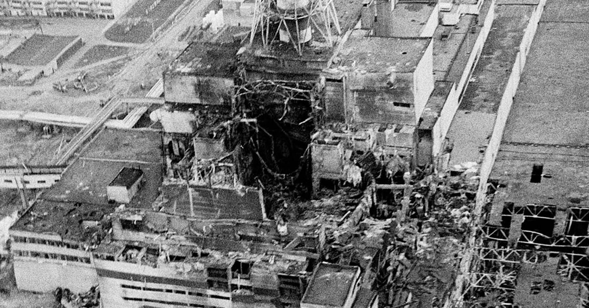
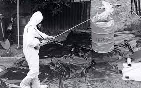
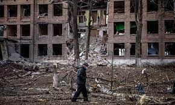
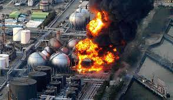
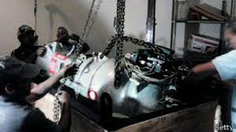

Maiores Acidentes Nucleares
Caso 1 - Chernobyl (1986) – Ucrânia
A desastre de Chernobyl ocorreu durante um teste de sistema no reator 4 da central nuclear, perto da cidade de Pripyat, na antiga República Socialista Soviética da Ucrânia. No dia 26 de abril de 1986, uma série de explosões liberou na atmosfera terrestre um volume de partículas radioativas 400 vezes maior que o liberado pela bomba atômica lançada pelos EUA em Hiroshima, no Japão, após a Segunda Guerra Mundial.
Mais de 200.000 km² de terra foram contaminados e a ONU estima que mais 5.000 ocorrências de câncer na Bielorússia, Ucrânia e Rússia podem ter tido relação com o desastre nos anos seguintes.
Caso 2 - Césio-137,Goiânia, Brasil 1987
Um dos casos mais recentes de desastre envolvendo a radiação no Brasil aconteceu em 1987, na cidade de Goiânia, em Goiás. Lá, dois catadores de lixo curiosos foram os responsáveis por desencadear um dos maiores acidentes envolvendo o isótopo Césio-137.
Ao vasculharem as antigas instalações do Instituto Goiano de Radioterapia – também conhecido como Santa Casa de Misericórdia –, os dois catadores de lixo encontraram um aparelho de radioterapia abandonado. Ambos tiveram a infeliz ideia de levar o dispositivo para casa, o que acabou resultando no envenenamento e na morte de centenas de pessoas. A situação só foi contornada porque a esposa de um dos catadores levou a cápsula de Césio-137 para a sede da Vigilância Sanitária, que identificou o elemento e conteve o problema.
Caso 3 - Kramatorsk, Ucrânia, 1989
No ano de 1989, em Kramatorsk, na Ucrânia, duas famílias que moravam em um mesmo prédio sentiram na pele o perigo da radiação. Em uma delas, a mãe viu as suas duas crianças morrerem por conta de uma leucemia contraída de forma desconhecida. Na segunda família, o filho mais velho também morreu, enquanto outro ficou gravemente ferido.
O motivo das mortes só foi descoberto depois que essas duas famílias contrataram especialistas para analisar o ocorrido. Eles constataram que uma cápsula de Césio-137 estava armazenada em uma parede de concreto existente entre os dois apartamentos. Esse elemento químico é utilizado em dispositivos de controle de processo radioisótopo.
Caso 4 - Fukushima Daiichi (2011) – Japão
Em março de 2011, uma dupla tragédia levou destruição ao Japão. Um terremoto devastador seguido de um tsunami danificou a usina nuclear de Fukushima Daiichi, gerando um acidente de nível 7 na escala INES, o segundo pior, ao lado de Chernobyl.
As ondas gigantescas destruiram os sistemas de energia e segurança da usina, levando à perda de resfriamento e colapsos em três reatores. O desastre provocou vazamentos radioativos, contaminação das águas e a evacuação em massa de trabalhadores e moradores das regiões afetadas. Mais de 60 mil pessoas foram forçadas a evacuar. As consequências do acidente seguem em estudo, assim como as medidas de desmonte da central, que podem perdurar por anos.
Caso 5 - Tepojaco, México, 2013
O último desastre nuclear da lista envolve o roubo e acidente com um caminhão que transportava uma carga de cobalto-60. Esse elemento era uma fonte de teleterapia radiativa proveniente de um hospital para um centro de armazenamento de resíduos radioativos. O veículo foi roubado em um posto de gasolina em Tepojaco, no México, em dezembro de 2013.
Quando foi localizado, cerca de 2,3 km de onde foi roubado, o caminhão havia sofrido um acidente, o que liberou a carga nuclear que carregava. Preocupadas, as autoridades emitiram um alerta para que qualquer um que tivesse entrado em contado com o material procurasse ajuda, caso contrário morreriam. Os ladrões nunca foram encontrados e provavelmente faleceram por conta da radiação do cobalto-60.